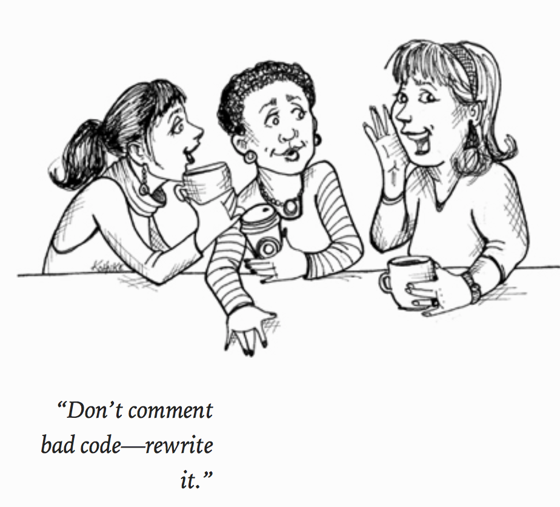

Have you been paying attention in your numerical analysis or scientific computation courses? If not, it could be a costly mistake. Here are some real life examples of what can happen when numerical algorithms are not correctly applied.
With computing I will mean solving scientific problems using computers. It covers numerical, analytical as well as symbolic computing. Computing is also about developing an understanding of the scientific process by enhancing algorithmic thinking when solving problems. Well written code is a piece of art by itself and expresses clarity.
Computing competence has always been a central part of the science and engineering education. Traditionally, such competence meant mastering mathematical methods to solve science problems - by pen and paper.
Today we are expected to use all available tools to solve scientific problems; computers primarily, but also pen and paper.
I will use the term/word algorithms in the broad meaning: methods (for example mathematical) to solve science problems, with and without computers.
Algorithms involving pen and paper are traditionally aimed at what we often refer to as continuous models.
Application of computers calls for approximate discrete models.
Much of the development of methods for continuous models are now being replaced by methods for discrete models in science and industry, simply because much larger problem classes can be addressed with discrete models, often also by simpler and more generic methodologies. However, verification of algorithms and understanding their limitations requires much of the classical knowledge about continuous models.
The power of the scientific method lies in identifying a given problem as a special case of an abstract class of problems, identifying general solution methods for this class of problems, and applying a general method to the specific problem (applying means, in the case of computing, calculations by pen and paper, symbolic computing, or numerical computing by ready-made and/or self-written software). This generic view on problems and methods is particularly important for understanding how to apply available, generic software to solve a particular problem.
Computing competence represents a central element in scientific problem solving, from basic education and research to essentially almost all advanced problems in modern societies. Computing competence is simply central to further progress. It enlarges the body of tools available to students and scientists beyond classical tools and allows for a more generic handling of problems. Focusing on algorithmic aspects results in deeper insights about scientific problems.
Today's project in science and industry tend to involve larger teams. Tools for reliable collaboration must therefore be mastered (e.g., version control systems, automated computer experiments for reproducibility, software and method documentation). In order to be efficient and to have code which can be extended upon, clean code matters even more.
Computing competence is about
from math import exp, log
def Trapez(a,b,f,n):
h = (b-a)/float(n)
s = 0
x = a
for i in range(1,n,1):
x = x+h
s = s+ f(x)
s = 0.5*(f(a)+f(b)) +s
return h*s
def f1(x):
return exp(-x*x)*log(1+x*sin(x))
a = 1; b = 3; n = 1000
result = Trapez(a,b,f1,n)
print result
Python offers an extremely versatile programming environment, allowing for the inclusion of analytical studies in a numerical program. Here we show an example code with the trapezoidal rule using SymPy to evaluate an integral and compute the absolute error with respect to the numerically evaluated one of the integral \( 4\int_0^1 dx/(1+x^2) = \pi \):
from sympy import Symbol, integrate
def Trapez(a,b,f,n):
h = (b-a)/float(n)
s = 0
x = a
for i in range(1,n,1):
x = x+h
s = s+ f(x)
s = 0.5*(f(a)+f(b)) +s
return h*s
# function to compute pi
def function(x):
return 4.0/(1+x*x)
a = 0.0; b = 1.0; n = 100
result = Trapez(a,b,function,n)
print "Trapezoidal rule=", result
# define x as a symbol to be used by sympy
x = Symbol('x')
exact = integrate(function(x), (x, 0.0, 1.0))
print "Sympy integration=", exact
# Find relative error
print "Relative error", abs((exact-result)/exact)
The following extended version of the trapezoidal rule allows you to plot the relative error by comparing with the exact result. By increasing to \( 10^8 \) points one arrives at a region where numerical errors start to accumulate.
The last example shows the potential of combining numerical algorithms with symbolic calculations, allowing you to
For the computation of various derivatives with different types of wave functions, you will find it useful to use python with symbolic python, that is sympy, see online manual. Using sympy allows you autogenerate both Latex code as well c++, python or Fortran codes. Here you will find some simple examples. We want to compute various derivatives of hydrogen-like single-particle state functions like the \( 2s \) hydrogen-orbital $$ \phi_{2s}(\boldsymbol{r}) = (Zr - 2)\exp{-(\frac{1}{2}Zr)}, $$ with \( r^2 = x^2 + y^2 + z^2 \).
from sympy import symbols, diff, exp, sqrt
x, y, z, Z = symbols('x y z Z')
r = sqrt(x*x + y*y + z*z)
r
phi = (Z*r - 2)*exp(-Z*r/2)
phi
diff(phi, x)
We can improve our output by factorizing and substituting expressions
from sympy import symbols, diff, exp, sqrt, factor, Symbol, printing
x, y, z, Z = symbols('x y z Z')
r = sqrt(x*x + y*y + z*z)
phi = (Z*r - 2)*exp(-Z*r/2)
R = Symbol('r') #Creates a symbolic equivalent of r
#print latex and c++ code
print printing.latex(diff(phi, x).factor().subs(r, R))
print printing.ccode(diff(phi, x).factor().subs(r, R))
We can in turn look at second derivatives
from sympy import symbols, diff, exp, sqrt, factor, Symbol, printing
x, y, z, Z = symbols('x y z Z')
r = sqrt(x*x + y*y + z*z)
phi = (Z*r - 2)*exp(-Z*r/2)
R = Symbol('r') #Creates a symbolic equivalent of r
(diff(diff(phi, x), x) + diff(diff(phi, y), y) + diff(diff(phi, z), z)).factor().subs(r, R)
# Collect the Z values
(diff(diff(phi, x), x) + diff(diff(phi, y), y) +diff(diff(phi, z), z)).factor().collect(Z).subs(r, R)
# Factorize also the r**2 terms
(diff(diff(phi, x), x) + diff(diff(phi, y), y) + diff(diff(phi, z), z)).factor().collect(Z).subs(r, R).subs(r**2, R**2).factor()
print printing.ccode((diff(diff(phi, x), x) + diff(diff(phi, y), y) + diff(diff(phi, z), z)).factor().collect(Z).subs(r, R).subs(r**2, R**2).factor())
With some practice this allows one to be able to check one's own calculation and translate automatically into code lines. Saves a lot of time and is much less error prone.
REAL FUNCTION GMOSH*8(N,L,NC,LC,N1,L1,N2,L2,LR,D)
C GENERALIZED TRANSFORMATION BRACKETS WRITTEN BY XXX!
C REF M.SOTONA AND M.GMITRO COMP.PHYS.COMM 3(1972)53
C D=MASS1/MASS2
IMPLICIT REAL*8(A-H,O-Z)
DIMENSION F(50),G(50),W(50)
IORD=0
ZERO=0.0D0
HALF=0.5D0
EIN=1.0D0
IF(IORD-10) 5,6,5
5 IORD=10
F(1)=ZERO
G(1)=DLOG(HALF)
W(1)=ZERO
DO 10 I=2,50
A=I-1
F(I)=F(I-1)+DLOG(A)
G(I)=G(I-1)+DLOG(A+HALF)
10 W(I)=DLOG(A+A+EIN)
6 GMOSH=ZERO
IF(N+N+NC+NC+L+LC-N1-N1-N2-N2-L1-L2) 500,12,500
12 IF(L+LC-LR) 500,13,13
13 IF(L1+L2-LR) 500,14,14
14 IF(IABS(L-LC)-LR) 15,15,500
15 IF(IABS(L1-L2)-LR) 16,16,500
16 DL=DLOG(D)
D1L=DLOG(D+EIN)
C it goes on like this, in total 509 lines.
SUBROUTINE argonne(j,l,lp,is,v1,v2,v3,r,n)
IMPLICIT REAL*8(A-H,O-Z)
DIMENSION v1(500),v2(500),v3(500),r(500)
data cte/3.72681d0/,xmu/0.6995d0/
DO i=1,n
v1(i)=0.d0
v2(i)=0.d0
v3(i)=0.d0
ENDDO
it=1-MOD(l+is,2)
xs=DFLOAT(is)
xj=DFLOAT(j)
xl=DFLOAT(l)
xlp=DFLOAT(lp)
xit=DFLOAT(it)
xb=(xj*(xj+1.d0)-xl*(xl+1.d0)-xs*(xs+1.d0))*0.5d0
xq=xl*(xl+1.d0)
yspin=4.d0*xs-3.d0
yisos=4.d0*xit-3.d0
xqp=xlp*(xlp+1.d0)
xbp=(xj*(xj+1.d0)-xlp*(xlp+1.d0)-xs*(xs+1.d0))*0.5d0
IF(l.EQ.j) xten=2.d0
IF(l.EQ.j+1) xten=-2.d0*(xj+2.d0)/(2.d0*xj+1.d0)
IF(l.EQ.j-1) xten=-2.d0*(xj-1.d0)/(2.d0*xj+1.d0)
xten=xten*xs
vaux=-4.801125d0+yisos*0.798925+1.189325*yspin
& +0.182875*yisos*yspin-0.1575*xten-
& 0.7525*xten*yisos+0.5625*xb+0.0475*xb*yisos
& +0.070625*xq-0.148125*xq*yisos-0.040625*
& xq*yspin-0.001875*xq*yisos*yspin
& -0.5425*xb*xb+0.0025*xb*xb*yisos
vaux1=2061.5625-477.3125*yisos-502.3125*yspin+
& 97.0625*yisos*yspin+108.75*xten+297.25*xten*yisos
& -719.75*xb-159.25*xb*yisos+8.625*xq+5.625*xq*yisos+
& 17.375*xq*yspin-33.625*xq*yisos*yspin+391. *xb*xb+145.0
& *xb*xb*yisos
DO i=1,n
xr=r(i)
xexp=DEXP(-xmu*xr)/(xmu*xr)
xgauss=1.d0-DEXP(-2.d0*xr*xr)
y=xexp*xgauss
t=y*xgauss*(1.d0+3.d0/(xmu*xr)+3.d0/(xmu*xmu*xr*xr))
tt=t*t
ws=1.d0/(1.d0+DEXP((xr-0.5d0)/0.2d0))
v1(i)=vaux*tt+
& vaux1*ws+cte*yspin*yisos*y+cte*t*xten*yisos
ENDDO
IF(l.NE.lp) THEN
xten=-2.d0*(xj+2.d0)/(2.d0*xj+1.d0)
xten=xten*xs
vaux=-4.801125d0+yisos*0.798925+1.189325*yspin
& +0.182875*yisos*yspin-0.1575*xten-
& 0.7525*xten*yisos+0.5625*xbp+0.0475*xbp*yisos
& +0.070625*xqp-0.148125*xqp*yisos-0.040625*
& xqp*yspin-0.001875*xqp*yisos*yspin
& -0.5425*xbp*xbp+0.0025*xbp*xbp*yisos
vaux1=2061.5625-477.3125*yisos-502.3125*yspin+
& 97.0625*yisos*yspin+108.75*xten+297.25*xten*yisos
& -719.75*xbp-159.25*xbp*yisos+8.625*xqp
& +5.625*xqp*yisos+
& 17.375*xqp*yspin-33.625*xqp*yisos*yspin
& +391. *xbp*xbp+145.0
& *xbp*xbp*yisos
xten2= 6.d0*DSQRT(xj*(xj+1.d0))/(2.d0*xj+1.d0)
xten2=xten2*xs
DO i=1,n
xr=r(i)
xexp=dexp(-xmu*xr)/(xmu*xr)
xgauss=1.d0-dexp(-2.d0*xr*xr)
y=xexp*xgauss
t=y*xgauss*(1.d0+3.d0/(xmu*xr)+3.d0/(xmu*xmu*xr*xr))
tt=t*t
ws=1.d0/(1.d0+dexp((xr-0.5d0)/0.2d0))
v2(i)=vaux*tt+vaux1*ws+cte*yspin*yisos*y+
& cte*t*xten*yisos
v3(i)=cte*t*xten2*yisos-0.1575*xten2*tt-
& 0.7525*xten2*yisos*tt
& +108.75*xten2*ws+297.25*xten2*yisos*ws
ENDDO
ENDIF
DO i=1,n
v1(i)=v1(i)/41.47
v2(i)=v2(i)/41.47
v3(i)=v3(i)/41.47
ENDDO
RETURN
END

// Main program begins here
int main(int argc, char* argv[])
{
string filename;
int NumberSpins, MonteCarloCycles;
double InitialTemp, FinalTemp, TempStep;
.....
// Start Monte Carlo sampling by looping over the selected Temperatures
for (double Temperature = InitialTemp; Temperature <= FinalTemp; Temperature+=TempStep){
vec ExpectationValues = zeros<mat>(5);
// Start Monte Carlo computation and get expectation values
MetropolisSampling(NumberSpins, MonteCarloCycles, Temperature, ExpectationValues);
WriteResultstoFile(NumberSpins, MonteCarloCycles, Temperature, ExpectationValues);
}
ofile.close(); // close output file
return 0;
}
Don't overload functions by transfering gazillions of variables and returning ditto, even this function has too many variables.
void InitializeLattice(int NumberSpins, mat &SpinMatrix, double& Energy, double& MagneticMoment)
{
// setup spin matrix and initial magnetization
for(int x =0; x < NumberSpins; x++) {
for (int y= 0; y < NumberSpins; y++){
SpinMatrix(x,y) = 1.0; // spin orientation for the ground state
MagneticMoment += SpinMatrix(x,y);
}
}
// setup initial energy
for(int x =0; x < NumberSpins; x++) {
for (int y= 0; y < NumberSpins; y++){
Energy -= SpinMatrix(x,y)*(SpinMatrix(PeriodicBoundary(x,y-1)+SpinMatrix(x,y+1));
}
}
}// end function InitializeLattice
How could we improve upon this?

In the steps that lead to the development of clean code you should think of
Many of the above aspetcs will save you a lot of time when you incrementally extend software over time from simpler to more complicated problems. In particular, you will benefit from many good habits:

Unit Testing is the practice of testing the smallest testable parts, called units, of an application individually and independently to determine if they behave exactly as expected.
Unit tests (short code fragments) are usually written such that they can be preformed at any time during the development to continually verify the behavior of the code.
In this way, possible bugs will be identified early in the development cycle, making the debugging at later stages much easier.
There are many benefits associated with Unit Testing, such as
Look up the guide on how to install unit tests for c++ at course webpage. This is the version with classes.
#include <unittest++/UnitTest++.h>
class MyMultiplyClass{
public:
double multiply(double x, double y) {
return x * y;
}
};
TEST(MyMath) {
MyMultiplyClass my;
CHECK_EQUAL(56, my.multiply(7,8));
}
int main()
{
return UnitTest::RunAllTests();
}
And without classes
#include <unittest++/UnitTest++.h>
double multiply(double x, double y) {
return x * y;
}
TEST(MyMath) {
CHECK_EQUAL(56, multiply(7,8));
}
int main()
{
return UnitTest::RunAllTests();
}
For Fortran users, the link at http://sourceforge.net/projects/fortranxunit/ contains a similar software for unit testing.
There are many types of unit test libraries. One which is very popular with C++ programmers is Catch
Catch is header only. All you need to do is drop the file(s) somewhere reachable from your project - either in some central location you can set your header search path to find, or directly into your project tree itself!
This is a particularly good option for other Open-Source projects that want to use Catch for their test suite.
Computing factorials
inline unsigned int Factorial( unsigned int number ) {
return number > 1 ? Factorial(number-1)*number : 1;
}
Simple test where we put everything in a single file
#define CATCH_CONFIG_MAIN // This tells Catch to provide a main()
#include "catch.hpp"
inline unsigned int Factorial( unsigned int number ) {
return number > 1 ? Factorial(number-1)*number : 1;
}
TEST_CASE( "Factorials are computed", "[factorial]" ) {
REQUIRE( Factorial(0) == 1 );
REQUIRE( Factorial(1) == 1 );
REQUIRE( Factorial(2) == 2 );
REQUIRE( Factorial(3) == 6 );
REQUIRE( Factorial(10) == 3628800 );
}
This will compile to a complete executable which responds to command line arguments. If you just run it with no arguments it will execute all test cases (in this case there is just one), report any failures, report a summary of how many tests passed and failed and return the number of failed tests.
#define
one identifier and
#include
one header and we got everything - even an implementation of main() that will respond to command line arguments. Once you have more than one file with unit tests in you'll just need to
#include "catch.hpp"
and go. Usually it's a good idea to have a dedicated implementation file that just has
#define CATCH_CONFIG_MAIN
#include "catch.hpp".
You can also provide your own implementation of main and drive Catch yourself.
TEST_CASE
macro.
The test name must be unique. You can run sets of tests by specifying a wildcarded test name or a tag expression. All we did was define one identifier and include one header and we got everything.
We write our individual test assertions using the
REQUIRE
macro.
Three levels of tests
How do we measure erformance? What is wrong with this code to time a loop?
clock_t start, finish;
start = clock();
for (int j = 0; j < i; j++) {
a[j] = b[j]+b[j]*c[j];
}
finish = clock();
double timeused = (double) (finish - start)/(CLOCKS_PER_SEC );
What happens when the code is executed? The assumption is that the code is ready to execute. But